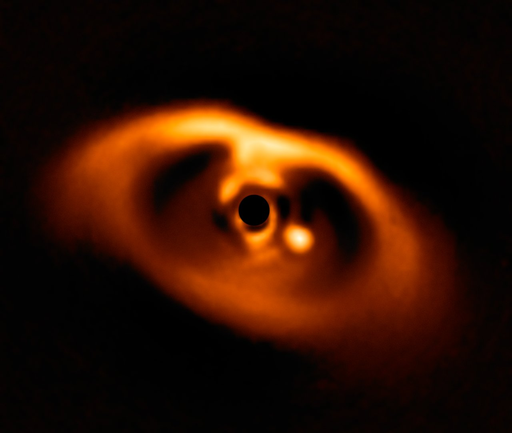
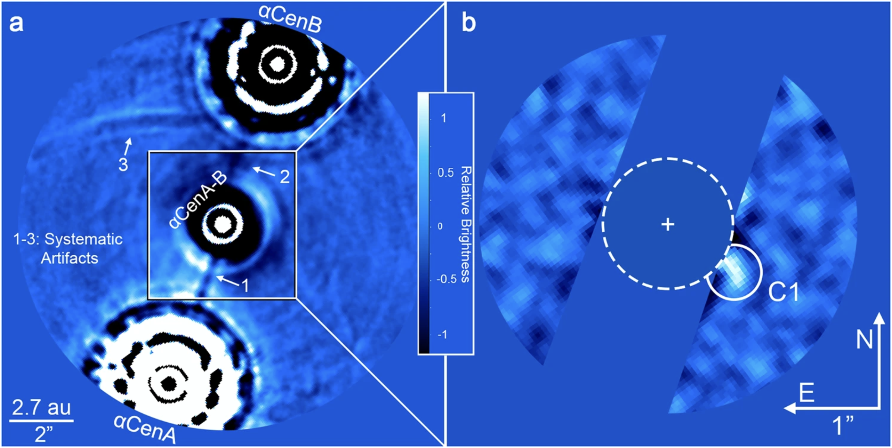
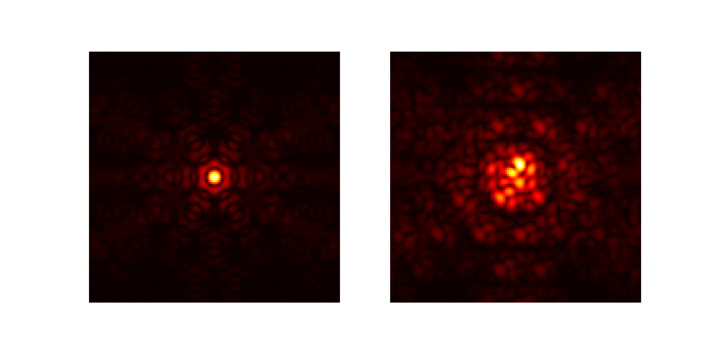
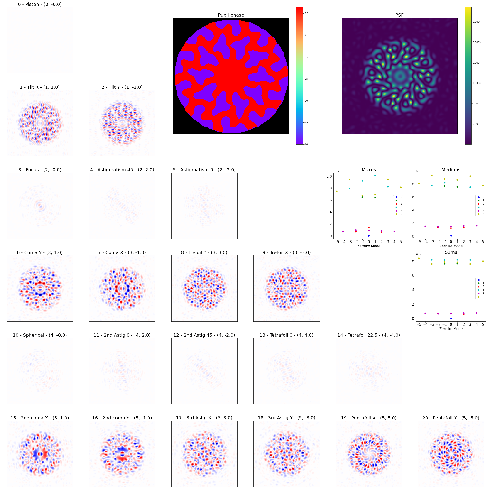
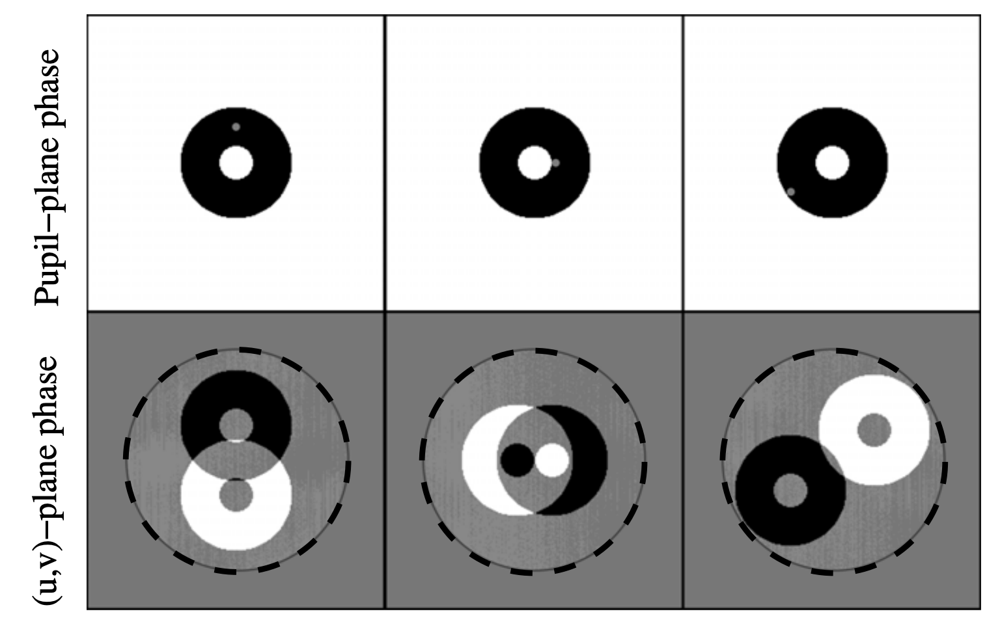

morphine
Kernel Phase and Coronagraphy with Automatic Differentiation
Benjamin Pope, UQ
benjaminpope.github.io/talks/fizeau/fizeau.html
Work in collaboration with Sydney students
Alison Wong (PhD)
and Louis Desdoigts (Honours),
and faculty Peter Tuthill (Sydney)
and Laurent Pueyo (STScI).
Direct Imaging
We are starting to detect planets at the epoch of formation - eg the accreting protoplanets PDS 70 bc.
(ESO/A. Müller et al.)
Candidate around our nearest neighbour, α Cen!
The main limitation on direct imaging is from wavefront aberrations which corrupt phase information.
Coronagraphs
Lyot Coronagraph - Credit: Rebecca Oppenheimer, Lyot Project
Credit: Rebecca Oppenheimer, Lyot Project
Phase Apodized Coronagraph: Por, 2019, arXiv:1908.02585
Toliman Space Telescope
'Abd al-Rahman al-Sufi,
MS. Marsh 144,
Bodleian Library
on the southern astrolabe
Detect planets with μ-arcsec astrometry
Astrometric precision proportional to gradient energy
Use diffractive optic to maximize this subject to constraints
Early pupil design & simulation

TOLIMAN lab test phase mask
Automatic Differentiation
What if we want to linearize an arbitrary optical system?
Optics is mathematically like machine learning: matrix multiplications and simple nonlinear functions
Can use automatic differentiation!
Autodiff is the enabling technology for deep neural networks - you use the chain rule to take derivatives of nearly-arbitrary numerical functions.
Implementations in TensorFlow, PyTorch, Julia native...
Here we use Google Jax, which resembles NumPy, to rewrite the Fourier/Fresnel optics code poppy to take derivatives
Jax permits
- Just-in-time 'jit' compilation - so faster than normal poppy.
- Accelerated Linear Algebra (XLA) - including on GPUs
- Automatic differentiation!
Comparable work in the DeepOptics group at Stanford
Louis Desdoigts - sensitivity of Toliman to Zernike modes
Alison Wong - phase retrieval and design by gradient descent
Phase Retrieval
Phase Retrieval with Saturation
Coronagraph Phase Mask Design - try it yourself!
Basis used in CLIMB
Toliman Phase Mask Designs
Kernel Phase
Correlate baselines around a triangle of receivers
Linearize response to phase noise
Jacobian matrix of outputs \(\mathbf{y}\) wrt inputs \(\mathbf{\theta}\)
\[ J_{i,j} \equiv \frac{\partial{y_i}}{\partial{\theta_j}} \\ \]
The Martinache 2010 kernel phase transfer matrix is an analytically determined Jacobian mapping pupil phases to u, v effects.
Check out this notebook!
The Future
What else can we use this for?